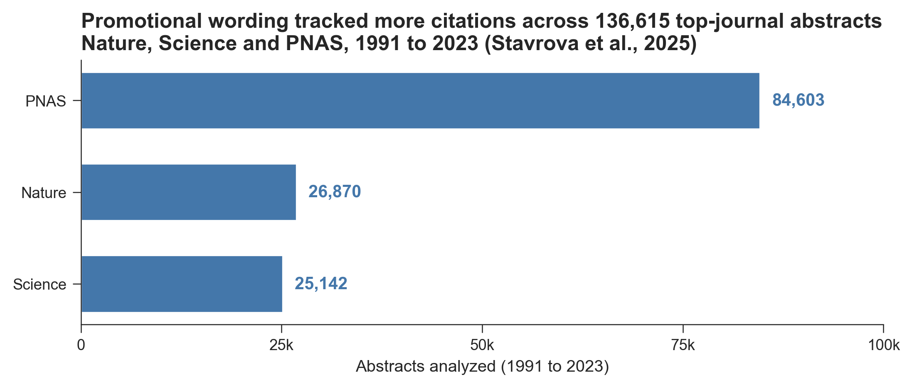

Why the wording of your abstract affects how often you get cited
The words you choose for your abstract are linked to how often your paper gets cited. A study of 136,615 papers in Nature, Science, and PNAS found that abstracts with more promotional language drew more citations, more full-text views, more media coverage, and higher Altmetric scores. Same journals. Same peer review. The wording still moved the numbers.

What counts as promotional language in an abstract?
Promotional language is wording that frames a finding as important, novel, or impactful. Think of words like unprecedented, remarkable, and first. Olga Stavrova and colleagues coded this language across abstracts published in three of the most selective journals in science between 1991 and 2023. They then linked the amount of promotional language in each abstract to that paper’s later citations, reads, and online attention.
Does the wording really matter?
The pattern held across every outcome they measured. More promotional language went with more citations, more full-text views, more news mentions, and higher Altmetric scores. These are papers that already cleared the highest bar in publishing. Even among them, framing predicted attention.
One honest caveat. This is a correlation, not a controlled experiment, so authors who use confident wording may differ in other ways too. But the size of the dataset and the consistency across four separate outcomes make the link hard to wave away. The same study also found that promotional language widened the gender gap in impact rather than closing it, so framing is a lever, not a fix for structural bias.
What to do with your next abstract
Write your abstract so a busy reader grasps why the work matters, not only what you did. Lead with the result. Say plainly what is new. Use concrete, confident language where the evidence earns it, and drop words the data cannot support. The goal is not hype. It is clarity that travels past the people already in your subfield.
Which leaves one question. If the words around your work change how often it gets cited, who is helping you choose them, across your abstract, your profile, and everywhere people search for you? For a growing number of researchers, the answer is Loud Camel, a tool that helps researchers get cited and recognized.